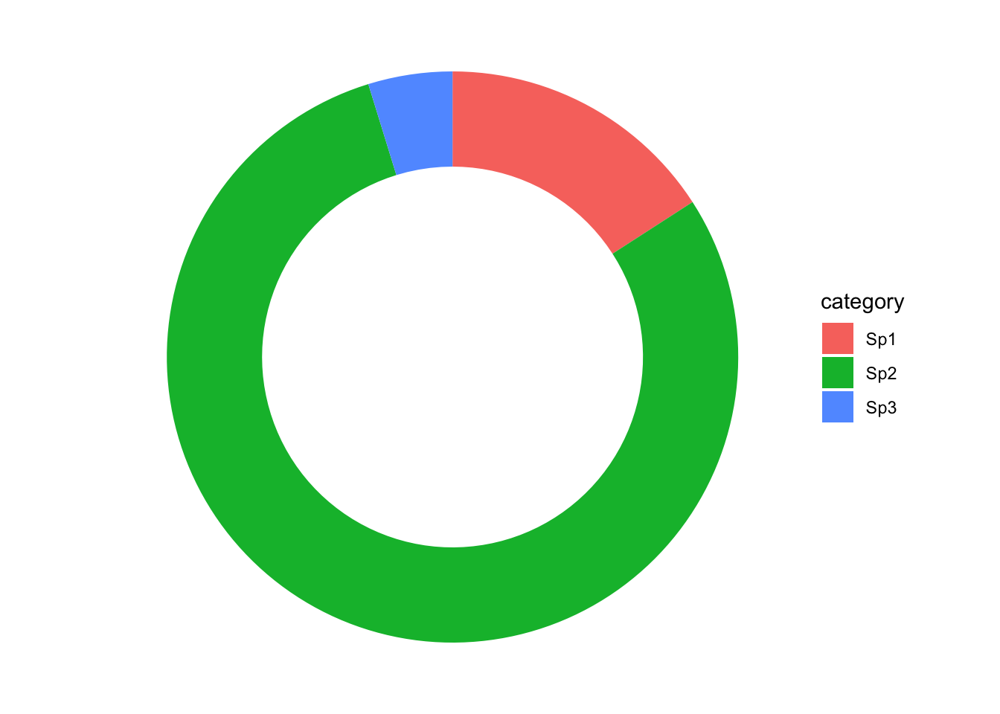
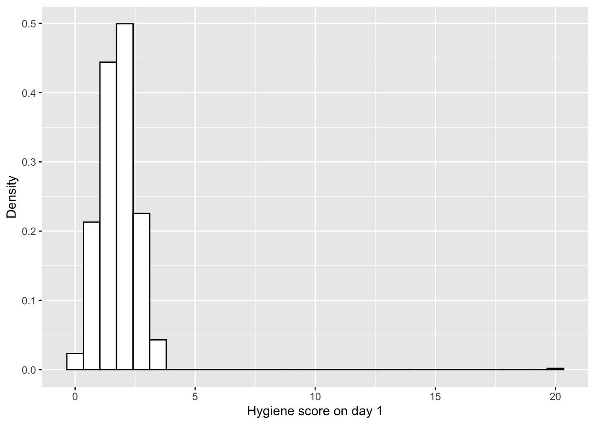

Chapter 18 Visualización de la distribución
Sobreponemos el intervalo de confianza de la mediana sobre la distribución beta
ggplot(Smokers, aes(Y2000P))+
geom_histogram(aes(y=..density..), bins=20, colour="white", fill="grey50")+
stat_function(aes(x = Smokers$Y2000P, y = ..y..), fun = dbeta, colour="red", n = 100,
args = list(shape1 = 3.593, shape2 = 9.185))+
geom_vline(xintercept =0.2320, colour="blue")+ # El intervalo de confianza del promedio
geom_vline(xintercept =0.2768, colour="blue")+
rlt_theme+
xlab("Proporción de fumadores por Pais")
library(betareg) # El paquete para hacer regresión beta
library(ggversa) # paquete para los datos
attach(dipodium)
head(dipodium, n=4)## # A tibble: 4 × 21
## `Tree Number` `Tree species` DBH `Plant number` `Ramet number` Distance
## <int> <chr> <dbl> <int> <int> <dbl>
## 1 1 E.o 75 1 1 2.47
## 2 1 E.o 76 2 1 1.97
## 3 2 E.o 76 3 1 1.95
## 4 3 E.o 58 4 1 3.24
## # ℹ 15 more variables: Orientation <dbl>, Number_of_Flowers <int>,
## # Height_Inflo <int>, Herbivory <chr>, RowPosition_NF <int>,
## # Number_Flowers_position <int>, Number_of_fruits <int>, Perc_FR_set <dbl>,
## # pardalinum_or_roseum <chr>, Fruit_position_effect <int>,
## # Frutos_si_o_no <int>, P_or_R_Infl_Lenght <chr>, `Num of fruits` <int>,
## # Species_Name <chr>, `Cardinal orientation` <int>18.1 Regresión beta, proporción de frutos por cantidad de flores
Ahora haremos el primer análisis de regresión donde nuestra respuesta es una proporción.
Los datos provienen de una especie de orquidea de Australia, Dipodium roseum, recolectado por RLT en 2004-2005. Vamos a evaluar la relación entre el número de flores y la proporción de frutos por planta. El primer paso es asegarar que no haya valores de 0 y 1. En este caso no hay ni una planta que tiene 100% de frutos, pero si hay individuos que tienen cero frutos.
RECUERDA x >0 y <1. NO se acepta 0 o 1. Entonces a los valores de 0 se le puede añadir un valor mínimo como 0.001 y a los 1 restar 0.001. En realidad esta modificación no impacta la interpretación de los resultados.
se remueva también del archivo los NA.
Nota que el modelo se construye como un modelo lineal betareg(y~x, data =na.omit(df)). Las variables del archivo son PropFR, el proporción de frutos (número de frutos/números de flores) por cada individuo y el número de flores, Number_of_Flowers.
#head(dipodium)
library(tidyverse)
dipodium$PropFR=dipodium$Perc_FR_set+0.0001 # solucionar para remover los cero
#dipodium$PropFR
dipodium2=dipodium %>%
dplyr::select(PropFR, Number_of_Flowers,Height_Inflo, Distance) %>%
filter(complete.cases(PropFR, Number_of_Flowers,Height_Inflo, Distance))
#dipodium2
write.csv(x=dipodium2, file="dipodium2.csv")
library(readr)
dipodium2 <- read_csv("Data/dipodium2.csv")## New names:
## Rows: 62 Columns: 5
## ── Column specification
## ──────────────────────────────────────────────────────── Delimiter: "," dbl
## (5): ...1, PropFR, Number_of_Flowers, Height_Inflo, Distance
## ℹ Use `spec()` to retrieve the full column specification for this data. ℹ
## Specify the column types or set `show_col_types = FALSE` to quiet this message.
## • `` -> `...1`modelpropFr=betareg(PropFR~Number_of_Flowers+Height_Inflo+Distance, data =na.omit(dipodium2))
summary(modelpropFr)##
## Call:
## betareg(formula = PropFR ~ Number_of_Flowers + Height_Inflo + Distance,
## data = na.omit(dipodium2))
##
## Quantile residuals:
## Min 1Q Median 3Q Max
## -2.5667 -0.5097 0.0825 0.9165 1.7887
##
## Coefficients (mean model with logit link):
## Estimate Std. Error z value Pr(>|z|)
## (Intercept) -3.796016 0.727139 -5.220 1.78e-07 ***
## Number_of_Flowers 0.076200 0.028247 2.698 0.00698 **
## Height_Inflo 0.006054 0.017847 0.339 0.73444
## Distance -0.111010 0.093825 -1.183 0.23674
##
## Phi coefficients (precision model with identity link):
## Estimate Std. Error z value Pr(>|z|)
## (phi) 4.8382 0.9982 4.847 1.25e-06 ***
## ---
## Signif. codes: 0 '***' 0.001 '**' 0.01 '*' 0.05 '.' 0.1 ' ' 1
##
## Type of estimator: ML (maximum likelihood)
## Log-likelihood: 113.9 on 5 Df
## Pseudo R-squared: 0.2757
## Number of iterations: 19 (BFGS) + 2 (Fisher scoring)18.2 Visualizar un gráfico de regresión beta
dipodiumbeta=dipodium2[,c("Number_of_Flowers","PropFR")] # crear un df con solamente las columnas de interes
dp2=dipodiumbeta[complete.cases(dipodiumbeta),] # remover los "NA"
modelpropFr=betareg(PropFR~Number_of_Flowers, data=dp2) # El modelo con solamente la explicativa
summary(modelpropFr)##
## Call:
## betareg(formula = PropFR ~ Number_of_Flowers, data = dp2)
##
## Quantile residuals:
## Min 1Q Median 3Q Max
## -2.3537 -0.4533 0.0723 0.8698 1.9507
##
## Coefficients (mean model with logit link):
## Estimate Std. Error z value Pr(>|z|)
## (Intercept) -3.88360 0.44251 -8.776 < 2e-16 ***
## Number_of_Flowers 0.08259 0.01803 4.581 4.62e-06 ***
##
## Phi coefficients (precision model with identity link):
## Estimate Std. Error z value Pr(>|z|)
## (phi) 4.6947 0.9699 4.84 1.3e-06 ***
## ---
## Signif. codes: 0 '***' 0.001 '**' 0.01 '*' 0.05 '.' 0.1 ' ' 1
##
## Type of estimator: ML (maximum likelihood)
## Log-likelihood: 112.9 on 3 Df
## Pseudo R-squared: 0.2538
## Number of iterations: 18 (BFGS) + 1 (Fisher scoring) #head(dp2)
#dp2$PropFR
predict(modelpropFr, type = "response") # calcular los valores estimados (predichos)## 1 2 3 4 5 6 7
## 0.02568523 0.02783519 0.03015954 0.04856508 0.05679268 0.05679268 0.05679268
## 8 9 10 11 12 13 14
## 0.06138242 0.06138242 0.06138242 0.06138242 0.06138242 0.06138242 0.06631700
## 15 16 17 18 19 20 21
## 0.06631700 0.07161801 0.07161801 0.07161801 0.07161801 0.07730766 0.07730766
## 22 23 24 25 26 27 28
## 0.07730766 0.08340872 0.08340872 0.08994433 0.08994433 0.08994433 0.08994433
## 29 30 31 32 33 34 35
## 0.09693789 0.10441284 0.10441284 0.10441284 0.10441284 0.10441284 0.11239245
## 36 37 38 39 40 41 42
## 0.11239245 0.12089957 0.12089957 0.12089957 0.12089957 0.12089957 0.12089957
## 43 44 45 46 47 48 49
## 0.12995632 0.12995632 0.12995632 0.12995632 0.12995632 0.13958381 0.14980172
## 50 51 52 53 54 55 56
## 0.14980172 0.14980172 0.17207828 0.17207828 0.17207828 0.17207828 0.19690033
## 57 58 59 60 61 62
## 0.19690033 0.22433274 0.22433274 0.23903102 0.27035714 0.28695536dp2$response=predict(modelpropFr, type = "response")
#dp2$link=predict(modelpropFr, type = "link")
dp2$precision=predict(modelpropFr, type = "precision")
dp2$variance=predict(modelpropFr, type = "variance")
dp2$quantile_.01=predict(modelpropFr, type = "quantile", at = c(0.01))
dp2$quantile_.05=predict(modelpropFr, type = "quantile", at = c(0.05))
dp2$quantile_.10=predict(modelpropFr, type = "quantile", at = c(0.10))
dp2$quantile_.15=predict(modelpropFr, type = "quantile", at = c(0.15))
dp2$quantile_.20=predict(modelpropFr, type = "quantile", at = c(0.20))
dp2$quantile_.25=predict(modelpropFr, type = "quantile", at = c(0.25))
dp2$quantile_.30=predict(modelpropFr, type = "quantile", at = c(0.30))
dp2$quantile_.35=predict(modelpropFr, type = "quantile", at = c(0.35))
dp2$quantile_.40=predict(modelpropFr, type = "quantile", at = c(0.40))
dp2$quantile_.45=predict(modelpropFr, type = "quantile", at = c(0.45))
dp2$quantile_.50=predict(modelpropFr, type = "quantile", at = c(0.50))
dp2$quantile_.55=predict(modelpropFr, type = "quantile", at = c(0.55))
dp2$quantile_.60=predict(modelpropFr, type = "quantile", at = c(0.60))
dp2$quantile_.65=predict(modelpropFr, type = "quantile", at = c(0.65))
dp2$quantile_.70=predict(modelpropFr, type = "quantile", at = c(0.70))
dp2$quantile_.75=predict(modelpropFr, type = "quantile", at = c(0.75))
dp2$quantile_.80=predict(modelpropFr, type = "quantile", at = c(0.80))
dp2$quantile_.85=predict(modelpropFr, type = "quantile", at = c(0.85))
dp2$quantile_.90=predict(modelpropFr, type = "quantile", at = c(0.90))
dp2$quantile_.95=predict(modelpropFr, type = "quantile", at = c(0.95))
dp2$quantile_.99=predict(modelpropFr, type = "quantile", at = c(0.99))
dp2## # A tibble: 62 × 26
## Number_of_Flowers PropFR response precision variance quantile_.01
## <dbl> <dbl> <dbl> <dbl> <dbl> <dbl>
## 1 3 0.0001 0.0257 4.69 0.00439 3.86e-18
## 2 4 0.0001 0.0278 4.69 0.00475 7.44e-17
## 3 5 0.0001 0.0302 4.69 0.00514 1.14e-15
## 4 11 0.0001 0.0486 4.69 0.00811 2.75e-10
## 5 13 0.0358 0.0568 4.69 0.00941 5.29e- 9
## 6 13 0.0938 0.0568 4.69 0.00941 5.29e- 9
## 7 13 0.0001 0.0568 4.69 0.00941 5.29e- 9
## 8 14 0.0001 0.0614 4.69 0.0101 1.96e- 8
## 9 14 0.364 0.0614 4.69 0.0101 1.96e- 8
## 10 14 0.105 0.0614 4.69 0.0101 1.96e- 8
## # ℹ 52 more rows
## # ℹ 20 more variables: quantile_.05 <dbl>, quantile_.10 <dbl>,
## # quantile_.15 <dbl>, quantile_.20 <dbl>, quantile_.25 <dbl>,
## # quantile_.30 <dbl>, quantile_.35 <dbl>, quantile_.40 <dbl>,
## # quantile_.45 <dbl>, quantile_.50 <dbl>, quantile_.55 <dbl>,
## # quantile_.60 <dbl>, quantile_.65 <dbl>, quantile_.70 <dbl>,
## # quantile_.75 <dbl>, quantile_.80 <dbl>, quantile_.85 <dbl>, …#modelpropFr$precision
#quantile_many=predict(modelpropFr, type = "quantile", at=c(.99))
#quantile_manyAl construir la figura para la regresión beta, una de las principales ventajas de utilizar este enfoque es que los cuartiles se calcula con una distribución beta. Por lo tanto, el margen de error NO baja de 0 y NO pasa de 1.
Evalua la siguiente figura en cada x hay una distribución beta, donde la linea roja representa una mediana, las lineas verdes son los cuartiles 25 y 75 y las lineas azules las percentilas 5 y 95. NOTA que la distribución no es simétrica, y cambia a travez de la regresión.
library(ggplot2)
ggplot(dp2, aes(x=Number_of_Flowers, y=PropFR))+
geom_point()+
geom_line(aes(y=quantile_.05), linetype="twodash", colour="blue")+
geom_line(aes(y=quantile_.25),linetype=2, colour="green")+
geom_line(aes(y=quantile_.50), colour="red")+
geom_line(aes(y=quantile_.75), linetype=2, colour="green")+
geom_line(aes(y=quantile_.95), linetype="twodash", colour="blue")+
ylab("Predicción de la proporción de frutos")+
xlab("Números de Flores")+
annotate("text", x=25, y=0.50, label="95th quartile", fontface="italic")+
annotate("text", x=32, y=0.39, label="75th quartile", fontface="italic")+
annotate("text", x=33, y=0.14, label="25th quartile", fontface="italic")+
annotate("text", x=33, y=0.27, label="Median", fontface="italic")+
annotate("text", x=35, y=-0.02, label="5th quartile", fontface="italic")+
theme(axis.title.y = element_text(colour="grey20",size=20,face="bold"),
axis.text.x = element_text(colour="grey20",size=20,face="bold"),
axis.text.y = element_text(colour="grey20",size=20,face="bold"),
axis.title.x = element_text(colour="grey20",size=20,face="bold"))+
theme(legend.position="none")+
rlt_theme
## Saving 7 x 5 in imageEsto es una representación de las distribuciones beta en las x, número de flores. En rojo simulamos la distribución de la proporción esperada de frutos en plantas que tienen 15 flores y en la linea azul simulamos la distribución esperada de la proporción de frutos en plantas con 30 flores.
18.3 Comparar el modelo tradicional lineal versus un modelo beta
Para comparar efectivadad de los modelos usamos el Akaike Information Criterion (AIC). En un acercmiento de selección modelo se acepta como mejor modelo el indice de AIC más pequeño, que representa el modelo meas parsimonio. Una diferencia de AIC DE 4 es significativo. Nota que el modelo beta es mucho mejor (AIC = -219) que el modelo de regresión lineal (AIC = -102)
#AIC(modelpropFr) # modelo beta
modelpropFr_lm=lm(PropFR~Number_of_Flowers, data=dp2)
AIC(modelpropFr,modelpropFr_lm)## df AIC
## modelpropFr 3 -219.8470
## modelpropFr_lm 3 -102.352618.4 Distribución de valores especificos
Evaluando la distribución de beta para valores específicos de x= Proporción de frutos por plantas basado en la cantidad de flores en la planta.
Seleccionar los diferentes valores de x y calcular el promedio y la varianza y convertir estos en \(\alpha\) y \(\beta\). Con estos parámetros se puede construir la densidad de la distribución por cada valor de x.
Se seleccionan valores específicos para la visualizar la distribución, las plantas que tienen 25, 30 y 35 flores. Se tiene que reorganizar los datos para calcular el promedio y la varianza.
dpQ=dp2 %>%
dplyr::select(c(1, 6:26))
dpQ2=dpQ%>%
filter(Number_of_Flowers== 35) %>% dplyr::select(c(2:22))%>% t %>% as.data.frame
dpQ2$Quartiles=c(.01, 0.05, .1, .15, .2, .25, .30, .35, .4, .45, .5, .55, .6, .65, .7,.75, .8, .85, .9, .95, .99 )
mean(dpQ2$V1, na.rm=FALSE)## [1] 0.2757771## [1] 0.04226223
Usando la varianza calculada en el chunk anterior, se puede calcular el \(\alpha\) y el \(\beta\).
estBetaParams <- function(mu, var) {
alpha <- ((1 - mu) / var - 1 / mu) * mu ^ 2
beta <- alpha * (1 / mu - 1)
return(params = list(alpha = alpha, beta = beta))
}
#mean(Smokers$Y2000P)
#var(Smokers$Y2000P)
estBetaParams(0.2757771,0.04226223)## $alpha
## [1] 1.027498
##
## $beta
## [1] 2.698331Producción de los gráficos. Se observa que para las plantas que tienen 25 y 30 flores la densidad esta sesgada a la izquierda, en otra palabra la probabilidad de tener pocas frutos domina la distribuciones.
##
## Attaching package: 'gridExtra'## The following object is masked from 'package:dplyr':
##
## combinea=ggplot(dipodium2, aes(PropFR))+
stat_function(aes(x = dipodium2$PropFR, y = ..y..), fun = dbeta, colour="red", n = 62,
args = list(shape1 =0.5418068, shape2 =3.135593))+
ylab("Beta \nDensity")+
xlab("Probabilidad de tener frutos")+
coord_cartesian(xlim=c(0,0.05))+
ggtitle("Densidad beta para plantas con 25 flores")
b=ggplot(dipodium2, aes(PropFR))+
stat_function(aes(x = dipodium2$PropFR, y = ..y..), fun = dbeta, colour="blue", n = 62,
args = list(shape1 = 0.7549048, shape2 =2.949404))+
ylab("Beta \nDensity")+
xlab("Probabilidad de tener frutos")+
coord_cartesian(xlim=c(0,0.1))+
ggtitle("Densidad beta para plantas con 30 flores")
c=ggplot(dipodium2, aes(PropFR))+
stat_function(aes(x = dipodium2$PropFR, y = ..y..), fun = dbeta, colour="black", n = 62,
args = list(shape1 = 1.027498, shape2 =2.698331))+
ylab("Beta \nDensity")+
xlab("Probabilidad de tener frutos")+
coord_cartesian(xlim=c(0,0.10))+
ggtitle("Densidad beta para plantas con 35 flores")
tresDensidad=grid.arrange(a,b,c, ncol=1)
## TableGrob (3 x 1) "arrange": 3 grobs
## z cells name grob
## 1 1 (1-1,1-1) arrange gtable[layout]
## 2 2 (2-2,1-1) arrange gtable[layout]
## 3 3 (3-3,1-1) arrange gtable[layout]## Saving 7 x 5 in imageUn segundo ejemplo
data("StressAnxiety", package = "betareg")
StressAnxiety <- StressAnxiety[order(StressAnxiety$stress),]
## Smithson & Verkuilen (2006, Table 4)
sa_null <- betareg(anxiety ~ 1 | 1,
data = StressAnxiety, hessian = TRUE)
sa_stress <- betareg(anxiety ~ stress | stress,
data = StressAnxiety, hessian = TRUE)
summary(sa_null)##
## Call:
## betareg(formula = anxiety ~ 1 | 1, data = StressAnxiety, hessian = TRUE)
##
## Quantile residuals:
## Min 1Q Median 3Q Max
## -0.8377 -0.8377 -0.4467 0.6217 3.2396
##
## Coefficients (mean model with logit link):
## Estimate Std. Error z value Pr(>|z|)
## (Intercept) -2.24396 0.09879 -22.71 <2e-16 ***
##
## Phi coefficients (precision model with log link):
## Estimate Std. Error z value Pr(>|z|)
## (Intercept) 1.796 0.123 14.6 <2e-16 ***
## ---
## Signif. codes: 0 '***' 0.001 '**' 0.01 '*' 0.05 '.' 0.1 ' ' 1
##
## Type of estimator: ML (maximum likelihood)
## Log-likelihood: 239.4 on 2 Df
## Number of iterations in BFGS optimization: 9##
## Call:
## betareg(formula = anxiety ~ stress | stress, data = StressAnxiety, hessian = TRUE)
##
## Quantile residuals:
## Min 1Q Median 3Q Max
## -2.0119 -0.7953 -0.1833 0.5658 3.1141
##
## Coefficients (mean model with logit link):
## Estimate Std. Error z value Pr(>|z|)
## (Intercept) -4.0237 0.1442 -27.90 <2e-16 ***
## stress 4.9414 0.4409 11.21 <2e-16 ***
##
## Phi coefficients (precision model with log link):
## Estimate Std. Error z value Pr(>|z|)
## (Intercept) 3.9608 0.2511 15.776 < 2e-16 ***
## stress -4.2733 0.7532 -5.674 1.4e-08 ***
## ---
## Signif. codes: 0 '***' 0.001 '**' 0.01 '*' 0.05 '.' 0.1 ' ' 1
##
## Type of estimator: ML (maximum likelihood)
## Log-likelihood: 302 on 4 Df
## Pseudo R-squared: 0.4748
## Number of iterations in BFGS optimization: 16## df AIC
## sa_null 2 -474.8960
## sa_stress 4 -595.9202## [1] 0.207021## visualization
attach(StressAnxiety)
plot(jitter(anxiety) ~ jitter(stress),
xlab = "Stress", ylab = "Anxiety",
xlim = c(0, 1), ylim = c(0, 1))
lines(lowess(anxiety ~ stress))
lines(fitted(sa_stress) ~ stress, lty = 2)
lines(fitted(lm(anxiety ~ stress)) ~ stress, lty = 3)
legend("topleft", c("lowess", "betareg", "lm"), lty = 1:3, bty = "n")
For an excellent new step by step use of the beta regression and why it is usefull see this website.
https://www.andrewheiss.com/blog/2021/11/08/beta-regression-guide/
“Activities reported in this website was supported by the National Institute of General Medical Sciences of the National Institutes of Health under Award Number R25GM121270. The content is solely the responsibility of the authors and does not necessarily represent the official views of the National Institutes of Health.”